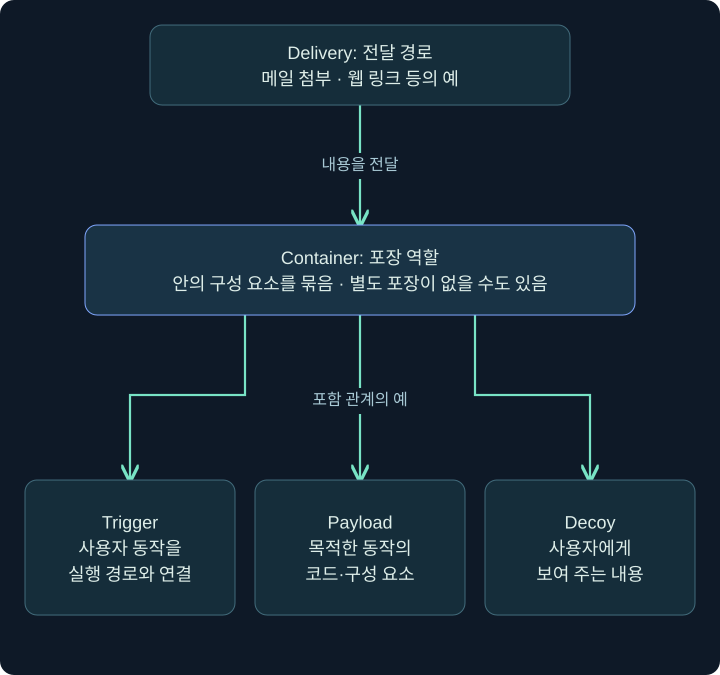
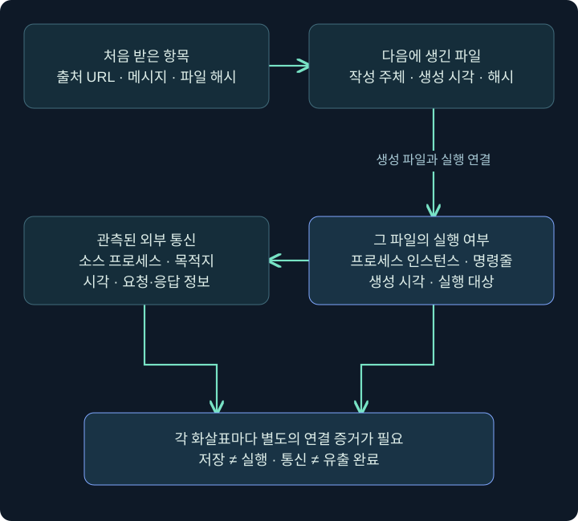
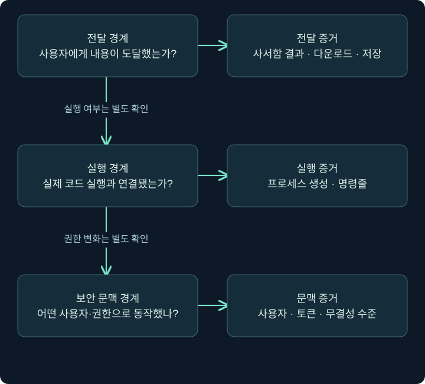

최초 접근의 구성 요소: 전달·포장·트리거·실행을 구별하기
피싱의 다섯 역할과 시간 순서를 나누고 파일 도착·실행·통신을 각각의 증거로 연결합니다.
1. 파일을 받았다는 사실과 최초 접근은 어떻게 다를까요?
직원이 메일 첨부 파일을 받았습니다. 메일 보안 장비는 이를 기록했고 직원은 화면에서 문서 이름을 보았습니다. 이때 공격자가 이미 그 컴퓨터를 제어한다고 말할 수 있을까요? 아직은 아닙니다. 전달, 저장, 열람, 코드 실행, 외부 통신은 서로 다른 사건입니다. 이번 장에서는 이 사건들을 연결하는 언어와 확인 방법을 배웁니다.
최초 접근(Initial Access)은 공격자가 조직 환경에 처음 발판을 마련하려는 목적을 뜻합니다. 공개 웹 서비스나 원격 접속 서비스의 취약점, 공급망 문제, 계정 악용 등 여러 경로가 있습니다. 이 장은 그중 사용자가 파일·링크와 상호작용하는 피싱 경로에 초점을 둡니다. 모든 최초 접근이 피싱이라는 뜻은 아닙니다.
지난 장의 Beacon·리스너·세션을 기억해 보세요. 리스너 설정을 저장했다고 세션이 생긴 것이 아니었던 것처럼, 패키지가 도착했다고 내부 코드가 실행된 것은 아닙니다. 이 구분은 레드팀 훈련의 성공 조건을 정할 때에도, SOC에서 사고 범위를 판단할 때에도 필요합니다.
이 장의 주소·파일명·시각·관측 사례는 독립적으로 만든 가상 예제입니다. 제공된 원본 장 전체를 대조하고 공식 문서를 확인했지만, 별도 Windows 가상 머신·메일 전송 실습·제품 실행 결과는 제공되지 않았습니다. 실제로 수행한 범위는 5장 5강의 합성 자료 Python 해석뿐이며, 나머지 절차는 화면을 읽고 확인하는 교육용 안내입니다.
2. 피싱 패키지를 다섯 역할로 나누어 봅니다
택배를 생각해 보세요. 전달 수단, 포장 상자, 사용자가 누르는 물건, 실제 동작을 수행하는 내용, 사용자에게 보여 주는 설명 자료는 역할이 다릅니다. 한 파일이 여러 역할을 겸할 수도 있으므로 확장자를 역할과 일대일로 외우지는 않습니다.
| 역할 | 뜻 | 가상 사례에서 묻는 질문 |
|---|---|---|
| Delivery | 사용자에게 도달하는 전달 경로 | 메일 첨부인가요, 웹 링크인가요? |
| Container | 여러 구성 요소를 묶는 포장 | ZIP 안에 어떤 파일이 있었나요? |
| Trigger | 사용자의 동작을 실행 경로와 연결하는 요소 | 문서 열람인가요, 바로가기 실행인가요? |
| Payload | 목적한 동작을 수행하는 코드나 구성 요소 | 어느 프로세스에서 무엇을 했나요? |
| Decoy | 사용자가 보게 되는 설명용·위장용 내용 | 정상 문서를 보았다는 사실과 실행 증거를 구별했나요? |
예를 들어 ‘메일 링크로 내려받은 ZIP 안의 바로가기를 눌렀더니 PDF가 열렸다’라는 진술에는 전달·포장·트리거·표시 내용의 단서가 있습니다. 그러나 실행된 다른 코드의 존재와 목적은 아직 확인되지 않았습니다. PDF가 열렸다고 그 뒤의 모든 행동이 정상이라는 뜻도, 반드시 악성 코드가 실행됐다는 뜻도 아닙니다.

그림은 분류 관계입니다. 세 개의 구성 요소가 반드시 모두 있어야 하거나 파일이 정확히 세 개여야 한다는 뜻은 아닙니다. 설치 파일은 컨테이너이면서 실행을 시작하는 요소가 될 수 있고, 웹 전달에서는 별도의 압축 파일이 없을 수도 있습니다.
3. 역할 분류와 시간 순서를 분리합니다
다섯 역할을 적어 놓으면 ‘Delivery 다음에 Container 다음에 Payload가 실행된다’라는 고정 순서로 읽기 쉽습니다. 하지만 분류표는 시간표가 아닙니다. 실제 시간표는 서로 다른 원천에서 수집한 기록으로 재구성합니다.
| 가상 관측 | 직접 설명할 수 있는 사실 | 추가로 필요한 것 |
|---|---|---|
| 09:00 메일 게이트웨이에 메시지 수신 | 메시지가 조직 경계에 도착함 | 사서함 전달·차단·격리 결과 |
| 09:02 웹 프록시에 URL 요청 | 해당 요청이 관측됨 | 응답·저장·사용자 주체 |
| 09:03 다운로드 폴더에 ZIP 생성 | 파일 생성이 관측됨 | 원본 URL과 파일 해시의 연결 |
| 09:05 문서 창이 표시됨 | 표시 내용에 대한 사용자 진술 | 실제 실행 파일·부모 관계·시각 |
| 09:06 특정 프로세스의 외부 연결 | 그 프로세스의 통신이 관측됨 | 목적지·내용·승인 여부·연관성 |
시각이 가까운 두 사건도 곧바로 원인과 결과가 되지는 않습니다. 브라우저가 미리 가져온 리소스, 백신의 파일 검사, 메일 보안 장비의 링크 확인이 끼어들 수 있습니다. 사용자 동작인지 자동 검사인지 구별할 수 있는 사용자·프로세스·세션 정보가 중요합니다.
4. 문서처럼 보이는 파일을 실제 형식과 연결합니다
파일 이름과 아이콘은 표시 정보입니다. 파일의 실제 형식, 파일 연결 프로그램, 실행 시 전달되는 인자는 별도의 정보입니다. 문서 아이콘이 있는 바로가기는 문서 자체와 다릅니다. 반대로 문서가 진짜 PDF라고 해서 그 전달 경로나 연결된 다른 파일까지 안전하다는 결론을 내릴 수는 없습니다.
Windows 11에서는 파일 탐색기 → 보기(View) → 표시(Show) → 파일 확장명(File name extensions)에서 일반 확장자 표시를 확인할 수 있습니다. Windows 10은 보기 리본의 같은 이름 항목을 확인합니다. 표시 설정을 확인한 뒤 파일의 속성(Properties) → 일반(General)에서 파일 종류를 읽습니다. 바로가기라면 바로가기(Shortcut) 탭의 대상과 시작 위치도 별도로 봅니다. 특수 확장자 표시와 정책 차이가 있으므로 화면에 보이는 이름만 최종 근거로 삼지 않습니다.
이 절차는 파일을 열어 실행하는 절차가 아닙니다. 조사 대상에서 더블클릭해 결과를 보는 대신, 승인된 분석 사본의 메타데이터를 확인합니다. 실제 바로가기 속성의 각 칸과 읽기 전용 조회는 5장 4강에서 상세히 다룹니다.
5. 최초 실행과 다음 단계 실행을 구별합니다
드로퍼(dropper)는 다른 구성 요소를 배치하는 프로그램을, 다운로더(downloader)는 외부에서 다음 내용을 가져오는 역할을 설명할 때 자주 쓰는 용어입니다. 두 기능을 함께 수행할 수도 있습니다. ‘파일이 생겼다’와 ‘그 파일이 실행됐다’는 별도의 주장입니다.
메일이나 웹에서 처음 받은 항목이 최종 실행 파일과 다를 수 있습니다. 이때 최종 파일 하나만 분석하면 앞의 전달 경로가 사라집니다. 반대로 첫 파일만 악성으로 분류했다고 다음 단계의 실행과 영향이 모두 밝혀진 것도 아닙니다.

그림의 화살표는 입증해야 할 연결입니다. 파일 생성에는 작성 주체와 해시를, 실행에는 프로세스 식별자와 명령줄을, 통신에는 소스 프로세스와 목적지를 연결합니다. 화살표가 그려져 있다고 실제 연결이 확인된 자료는 아닙니다.
6. 복잡한 경로를 만났을 때 단계를 지우지 않습니다
바로가기, 스크립트 호스트, 관리 도구, .NET 구성 요소가 한 사건에서 이어질 수 있습니다. 여러 층을 거치는 이유는 배포 편의, 정상 소프트웨어 구조, 또는 분석을 어렵게 하는 목적 등 다양합니다. 층이 많다는 사실만으로 한 가지 목적을 확정하지 않습니다.
분석 메모에는 각 단계의 입력·처리 주체·출력·근거를 적습니다. 예를 들어 입력이 스크립트이고 처리 주체가 스크립트 호스트라면, 실제 명령줄과 자식 프로세스 기록이 필요한 이유를 설명할 수 있습니다. 스크립트에서 문자열로 발견한 프로그램 이름과 로그에서 관측한 프로그램 실행은 구별합니다.
가상의 자료에 ‘LNK 뒤에 스크립트가 있었음’만 적혀 있다면 다음 프로그램의 실행까지 단정하지 마세요. 반대로 EDR이 한 단계를 차단했다면 그 이전에 저장된 파일과 이미 시작된 다른 프로세스가 있는지도 확인해야 합니다. 경로의 중간에서 끊겼다는 사실과 전체 환경이 정리됐다는 사실은 다릅니다.
7. 세 개의 경계로 훈련 목표를 정합니다
훈련에서 ‘성공했다’라는 단어를 쓰려면 어떤 경계를 통과했는지 먼저 정의해야 합니다. 메일 도착을 검증하는 훈련과 단말 실행 탐지를 검증하는 훈련은 같은 성공 조건을 쓰지 않습니다.

첫 경계는 사용자에게 내용이 전달되는 지점, 둘째는 실제 코드 실행과 연결되는 지점, 셋째는 실행 계정·권한·네트워크 접근 같은 문맥입니다. 단말의 사용자 권한으로 실행됐다는 사실만으로 관리자 권한을 획득했다고 기록할 수 없습니다. UAC 창 표시, 동의, 토큰 변화도 서로 다릅니다.
이 관점으로 검증 계획을 쓰면 ‘메일 보안 장비가 파일을 차단했는가’, ‘사용자의 보고가 담당자에게 도달했는가’, ‘실행이 시도됐을 때 단말에서 무엇이 기록됐는가’를 각각 측정할 수 있습니다. 실제 수신자에게 파일을 보내는 행위는 이 강의의 실습 범위에 포함되지 않습니다.
8. 읽기 전용 사례 분류 연습
다음은 서로 다른 가상 사례입니다. 같은 사건의 연속이라고 가정하지 말고, 주어진 근거로만 가장 강한 문장을 골라 보세요.
| 사례 | 제공된 근거 | 지금 적을 수 있는 결론 |
|---|---|---|
| A | 메시지는 격리됨, 사서함 전달 기록 없음 | 경계 수신과 격리가 관측됐으며 사용자 전달은 미확인 |
| B | ZIP 파일 생성, 내부 목록만 확보 | 저장·구성은 확인했으나 내부 파일 실행은 미확인 |
| C | 바로가기 대상에 프로그램 경로가 있음 | 설정된 실행 대상의 단서이며 실제 실행 기록은 아님 |
| D | 프로세스 생성과 외부 연결을 같은 인스턴스로 연결 | 실행·통신 관계를 조사할 근거이며 유출 완료는 별도 |
조건을 하나 바꾸겠습니다. 사례 B에 압축 해제된 파일의 생성 기록이 추가되면 ‘내부 파일 저장’까지 말할 수 있습니다. 하지만 여전히 실행됐다는 결론은 추가되지 않습니다. 새 증거가 어느 주장까지 넓혀 주는지 한 단계씩 판단하는 연습입니다.
9. 조사 기록에 남길 최소 정보
메시지 ID, 수신자, URL, 원본·파생 파일의 해시, 프로세스 인스턴스와 생성 시각, 모듈 경로, 네트워크 목적지 등은 서로 다른 층의 식별자입니다. 모든 자료를 한 칸에 모으기보다 어떤 연결을 지지하는지 함께 적습니다. 개인 메시지나 파일 안 개인정보는 조사 목적에 필요한 범위에서 취급합니다.
‘현재 알려진 것’, ‘추정한 것’, ‘아직 없는 것’을 나누면 다음 조치도 명확해집니다. 예를 들어 파일은 확보했지만 실행 기록이 없다면, “감염 완료” 대신 “전달 파일 확보, 실행 여부 확인 중”이라고 기록할 수 있습니다. 로그가 없다는 결론에는 수집 구성과 보존 기간이라는 한계도 붙입니다.
이 장은 이러한 조사 언어를 기반으로 각 형식의 작동 원리를 자세히 배웁니다. 앞으로 나오는 속성 화면과 명령도 파일을 무조건 실행하기 위한 지시가 아니라, 주어진 자료에서 무엇을 확인할 수 있는지를 설명하는 도구입니다.
10. 복습과 바로 읽는 해설
복습 1. 메일이 도착하면 최초 접근이 완료된 것인가요?
해설: 아닙니다. 경계 수신, 사서함 전달, 저장, 사용자 상호작용, 실행과 후속 접근을 구별해야 합니다. 무엇을 성공 조건으로 삼았는지도 먼저 정의합니다.
복습 2. 컨테이너·트리거·페이로드는 반드시 별도 파일인가요?
해설: 아닙니다. 역할을 분류한 것이어서 한 항목이 여러 역할을 겸하거나 일부 역할이 별도로 존재하지 않을 수 있습니다. 확장자만으로 일대일 대응시키지 않습니다.
복습 3. PDF가 정상적으로 열렸다면 뒤의 실행도 정상인가요?
해설: PDF 표시 사실만으로는 판단할 수 없습니다. 표시 내용과 실제 프로세스·파일·통신의 출처를 나누어 조사합니다.
복습 4. 바로가기의 대상 경로를 읽으면 실행을 입증하나요?
해설: 설정된 대상에 대한 정적 단서입니다. 실제 실행은 프로세스 생성과 명령줄 등 별도 관측으로 확인해야 합니다.
복습 5. 다운로더와 드로퍼는 어떤 질문을 돕나요?
해설: 다음 구성 요소를 어디서 가져오고 어떻게 배치했는지를 나누는 용어입니다. 같은 프로그램이 두 기능을 수행할 수 있으며 배치와 실행도 따로 확인합니다.
복습 6. 프로세스 생성 직후 연결이 있으면 유출 완료인가요?
해설: 실행과 통신의 연관성을 조사할 근거입니다. 전송 내용·수신 측·민감 자료의 접근 및 전송 등 결과 증거가 더 필요합니다.
복습 7. 격리됐다는 경보로 단말 복구도 완료됐나요?
해설: 경보가 가리키는 차단 단계와 실제 효과를 확인해야 합니다. 이전 저장·실행 여부와 남은 파일·프로세스·지속 상태는 별도 점검합니다.
복습 8. 이번 강의에서 실제로 수행한 것은 무엇인가요?
해설: 원본 범위와 공식 설명을 대조하고 개념·사례를 구성했습니다. 메일 전송이나 단말 실행은 하지 않았습니다. 이 장에서 별도로 실제 수행한 합성 자료 해석은 5강에 명시합니다.
11. 공식 근거와 다음 학습
공식 자료 확인일은 2026년 11월 3일입니다. 사례·파일명과 다이어그램은 독립 제작했습니다.
- MITRE Initial Access, Phishing: 최초 접근 목적과 피싱 분류.
- Microsoft: 파일 확장명과 형식: 확장자와 탐색기 표시.
- Microsoft: HTML smuggling 관측 연구: 전달·브라우저·후속 실행을 연결하는 역사적 분석 사례.
다음 강의에서는 정상 실행 파일이 어떤 DLL과 .NET 구성 요소를 불러오는지, 실패한 탐색과 실제 적재를 어떻게 구별하는지 배웁니다.